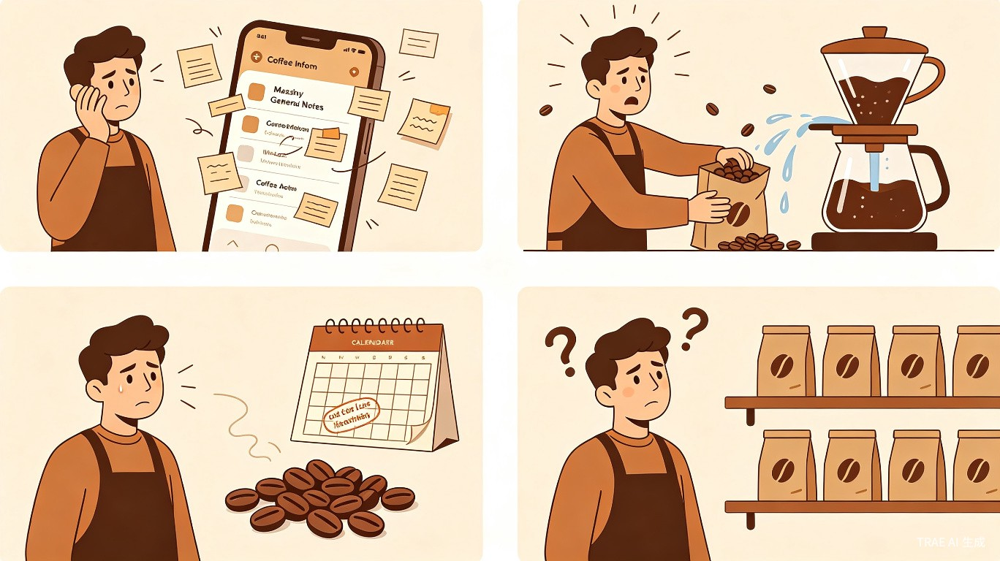
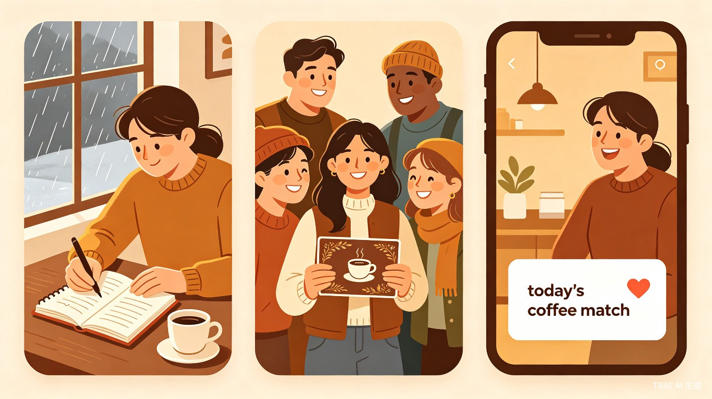
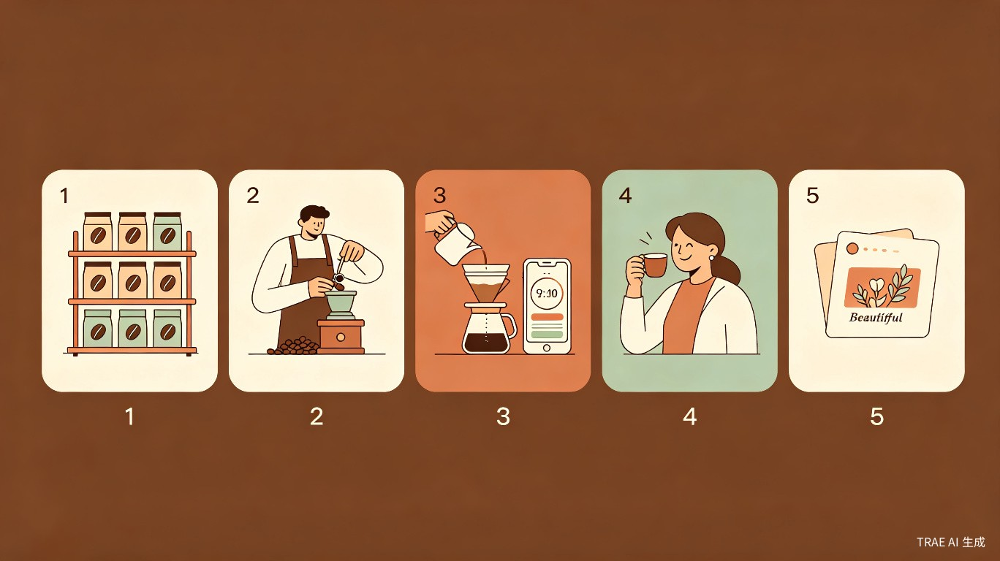

创意介绍
手冲咖啡爱好者在日常冲煮中面临"记录难、参数忘、豆子乱、选择纠结"四大痛点——没有一款专为咖啡冲煮场景设计的记录工具，冲煮时翻找豆卡和参数打断仪式感，囤积的咖啡豆缺乏管理和赏味期提醒，每天面对十几款豆子不知道今天该喝哪款。
为什么会想到做这个
作为咖啡爱好者，我从不同渠道购入各种咖啡豆，喝过很多好咖啡，也攒了一堆包装袋。想要一个像咖啡手帐一样的专属应用，既能方便地记录每次冲煮的心得和风味，又能在冲煮过程中随时查看参数。日常中经常需要翻找咖啡袋或豆卡来确认研磨度、水温等参数，不同器具之间的研磨度调整也让人头疼。我希望每次冲煮不仅是一杯咖啡，更是一段值得被记住的时光。
大概是什么产品
一款微信小程序，融合豆仓管理、冲煮计时助手、智能推荐、咖啡日记和精美分享卡片五大核心功能，让每一次冲煮都成为有仪式感的生活方式记录。
目标用户及痛点
面向哪些用户
手冲咖啡爱好者，尤其是有一定咖啡豆囤积量、注重冲煮体验和风味探索的用户。
在什么场景下使用
日常冲煮记录
冲煮过程中实时记录参数和步骤，冲煮完成后补充心情标签、风味笔记、当天天气等，形成完整的咖啡日记
快速查阅参数
冲煮前或冲煮中，一键查看当前咖啡豆的推荐冲煮方案，无需翻找包装袋或豆卡
豆仓管理
录入新购入的咖啡豆信息，追踪赏味期，管理家中咖啡豆库存
选择困难时
根据心情、天气、时间等维度，获得"今天适合喝什么"的智能推荐

当前痛点
记录无专属工具
想记录冲煮心得只能用通用笔记或手帐，没有针对咖啡场景定制化的记录模板（研磨度、水温、粉水比、萃取时间等字段）
冲煮参数查询不便
冲煮时需要翻找咖啡袋或豆卡确认参数，打断冲煮的沉浸感和仪式感，或只能依赖不靠谱的记忆
豆子缺乏管理
没有咖啡豆赏味期提醒，豆子放久了风味流失而不自知，囤积的豆子也缺乏系统整理
选择焦虑
面对多款咖啡豆，经常纠结"今天该喝哪款"，缺乏个性化推荐
情绪价值 — 核心差异化
啡常不只是工具，更是一个懂咖啡、懂你的陪伴者。我们从三个维度为用户创造情绪价值：

仪式感记录
将每次冲煮变成一场有仪式感的生活仪式，记录心情、天气、音乐，让喝咖啡从"提神"升级为"生活美学"。日记模板自带情绪化字段，冲煮计时器配合舒缓的视觉动效，让整个过程本身就是一种疗愈。
社交认同感
生成精美的咖啡冲煮卡片，一键分享到朋友圈或小红书，满足咖啡爱好者的身份认同和社交表达需求。提供多种卡片模板风格，让每一杯咖啡都成为值得炫耀的作品。
智能陪伴
根据用户的心情、天气、时间智能推荐"今天适合喝什么"，配以温暖有温度的文案。冲煮过程中给予步骤引导和鼓励，让独处冲煮不再孤单，让每一天的咖啡时光都有被照顾的感觉。
价值与意义
情绪价值
- 仪式感：让冲煮成为生活美学
- 社交认同：精美卡片满足身份表达
- 智能陪伴：温暖推荐+步骤引导
商业价值
- 精品咖啡豆/器具引流与佣金
- 咖啡博主、烘焙品牌合作推广
- 个性化咖啡豆订阅推荐服务
产品功能设计
四大核心 Tab
今日
今日推荐 + 快速开始冲煮。根据心情、天气、时段推荐适合的豆子，配温暖文案
日记
核心功能。冲煮中实时记录 + 冲煮后回顾编辑，时间线展示历史日记
豆仓
豆子管理全流程。录入信息、赏味期提醒、关联日记、一键冲煮
我的
冲煮统计概览、个人偏好设置、最常喝的豆子排行
冲煮计时器 — 核心体验
设计原则：单手可操作、不弄脏手机。大面积计时显示，冲煮台上一眼可见。支持闷蒸、分段注水独立计时，点击切换阶段自动记录时间节点。冲煮结束后自动弹出引导，无缝进入日记编辑。
今日推荐 — 情绪入口
首次使用引导用户设置偏好，推荐逻辑简单透明：天气 + 时段 + 心情 → 匹配豆子风味标签。推荐文案温暖有个性，用户滑动选择心情，推荐实时更新。
分享卡片 — 社交出口
基于日记内容自动生成精美卡片，包含日期、豆子信息、冲煮参数、心情标签、风味标签、用户照片。提供 2-3 种模板风格（简约/文艺/活泼），适配朋友圈/小红书竖图比例。
用户旅程
一次完整的咖啡体验，啡常全程陪伴：

MVP 范围
做精核心功能，不做大而全。MVP 阶段聚焦"日记 + 豆仓 + 冲煮助手 + 推荐 + 分享"五大模块。
| MVP 必做 | 后续迭代 |
|---|---|
| 咖啡日记（冲煮中 + 冲煮后记录） | 风味偏好分析 |
| 豆仓管理（增删改查 + 赏味期提醒） | 社区/好友互动 |
| 冲煮助手（计时器 + 参数速查） | 咖啡豆电商推荐 |
| 今日推荐（心情/天气维度） | 多器具研磨度智能换算 |
| 分享卡片生成 | 用户账号体系/云同步 |
技术方案
MVP 阶段使用微信小程序本地存储（wx.setStorage），无需后端服务器。数据结构简单：豆子列表 + 日记列表，日记关联豆子 ID。赏味期提醒使用微信小程序本地通知能力。不做云同步，降低开发复杂度。
啡常，记录你的咖啡日常，让每一杯都不被遗忘。"